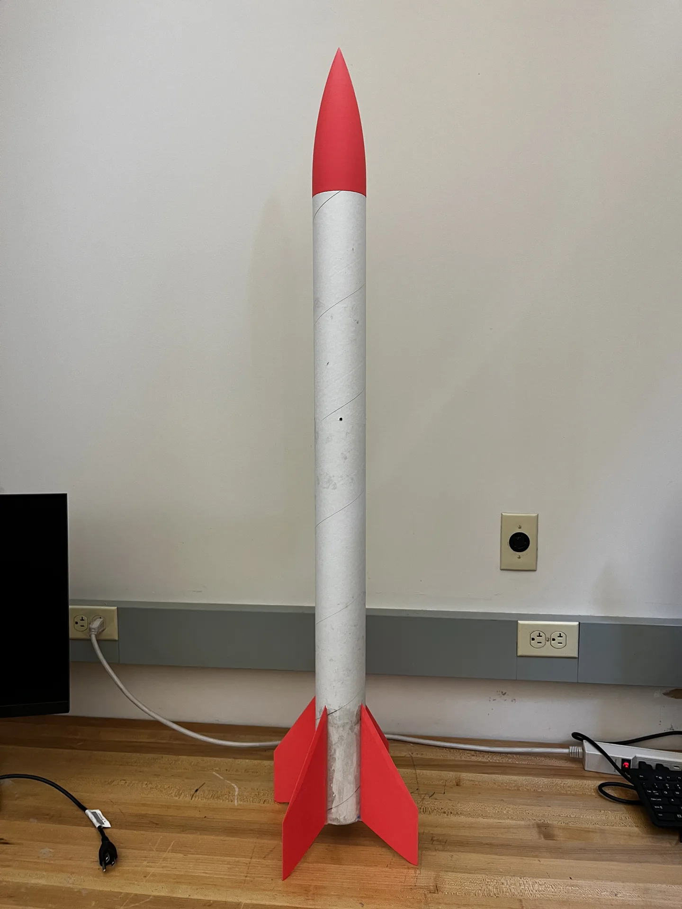
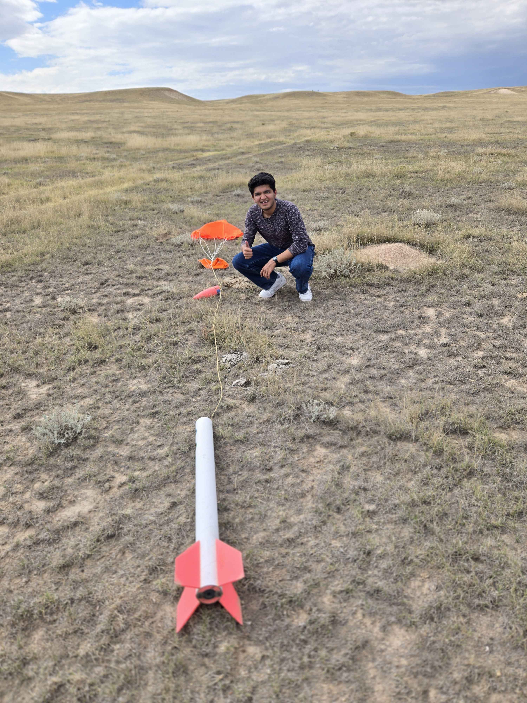

R1 Kit: L1 Certification Rocket
The rocket I built and flew to earn my National Association of Rocketry Level 1 certification. It came from Ram Rocketry's R1 kit, part of a club effort to cut the cost of getting an L1 by about 50%. The kit uses 3D-printed parts made in the campus 3D printing lab, and it comes with assembly documentation that members can follow on their own.
My focus: Building and flying my own R1 kit for my L1 certification, contributing to the club's kit cost-reduction effort, and helping put together the assembly documentation.

- Result
- NAR Level 1 certification
- Cost to members
- About 50% lower
- Design motor
- AeroTech H100W-14A (38 mm)
- Manufacturing
- Campus 3D printing lab
Why a club kit
Commercial L1 kits are a real cost barrier for students who want to get into high-power rocketry. Ram Rocketry's answer was the R1 kit, designed by club member Ian Leary. Most of the structural parts are 3D-printed in the campus 3D printing lab instead of bought, and they're paired with a cardboard body tube and off-the-shelf hardware. The result was about a 50% drop in what it costs a member to earn their L1. The kit is designed around an AeroTech H100W-14A. Because it accepts any 38 mm motor, it can also fly on I or J motors, which leaves room for a later L2 attempt.
Printed components
The printed parts are the lower and upper motor mounts, the fins, the parachute mount, the nosecone, and the square pins that lock the fins to the motor mounts through the airframe. Each part has its own print settings. Most structural parts use 15–20% infill with four walls. The square pins print at 85% infill because they carry the fin loads. Supports are kept to the few surfaces that need them.
Assembly documentation
The kit ships with an instruction manual so members can build it without someone walking them through every step. It covers the following:
- Fit check before epoxy. Printed parts are not always dimensionally exact, so pins are sanded to fit and M4 nuts are superglued in place first.
- Drilling the airframe from a hole template. Holes start from a pilot hole and are deburred inside and out.
- Injecting epoxy through the airframe. A syringe fills the motor mounts and parachute mount through access holes, with the epoxy weighed out to the correct ratio and a spent motor used to keep the mounts square.
- Bonding the fins. Fins go onto the square pins and get epoxy fillets in multiple rounds, followed by a 24-hour cure before any load.
- Parachute packing and L1 paperwork. This covers NAR membership, the certification form, and bringing an OpenRocket simulation that shows the stability margin.

Outcome
I flew my R1 and recovered it intact, earning my NAR Level 1 certification. Beyond my own flight, the kit and its documentation give other Ram Rocketry members a cheaper, repeatable path to their L1. They can use campus resources and a written procedure instead of a commercial kit.